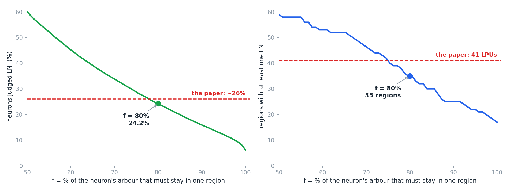

先看全貌整條流程長這樣
STEP 0你得先有兩樣東西
七個步驟的輸入不是原始的顯微鏡影像。它預設你手上已經有：
- 一套 neuropil 分區。論文用的是自己切出來的 58 個。
- 一份「哪些神經元是 LN」的標記。
第二項有個先後問題。論文對 LN 的定義是「神經突完全侷限在單一個腦區之內」——哪個腦區？答案是既有的 neuropil。所以整條路是：
在我們自己的資料上做一次
這一步不必只停在紙上。本機有兩樣現成的東西：D03 的標準腦分區（Ito 2014 的 75 個腦區）與 D06 的 28,573 顆 FlyCircuit 骨架體素。缺的只有一樣——怎麼判定一顆神經元是不是 LN。
但論文是目視判讀每一顆神經元的支配範圍（visually inspected and delineated），我們沒有那雙眼睛，得把這句話翻成一條算得出來的規則。
我們用的規則是比例：
結果
28,573 顆裡有 6,922 顆符合，佔 24.2%。論文報的是「約 26% 的神經元屬於 LPU-LN」。這 6,922 顆分布在 75 個腦區中的 35 個：

scripts/make_part2_figures.py 算出。資料：D06 的 28,573 顆骨架體素 ＋ D03 的腦區標籤。35 個腦區有 LN，論文數出 41 個 LPU——這兩個數不能直接比
差 6 不代表我們少找到 6 個。這兩個數是不同的東西，理由有三個，而且每一個都指向不同方向。
| 理由 | 說明 | 方向 |
|---|---|---|
| 41 主要不是數 LN 數出來的 | 論文寫「Most anatomically demarcated neuropil regions…satisfied the criteria of an LPU」——預設是「一個 neuropil ＝ 一個 LPU」。七個步驟只在需要細分時出手，而全腦只成功出手一次（VLP）。所以 41 基本上是 neuropil 的清單，不是 LN 普查的結果 | 不可比 |
| 合併 | 我們表上蕈狀體四塊幾乎全是 0。論文也是這樣看的——但它的結論相反：the entire MB was one LPU because neither the calyx nor the MB lobe had its own populations of LNs。四個 0 在論文那邊貢獻了一對 LPU | 我們偏低 |
| hub 不算 LPU | 論文正文列的四對（OPTU、Nod、OG、IDLP）有神經束但沒有 LN 族群，被歸為 hub，不在 41 裡。但只有兩個對得起來：Nod 就是 Ito 的 NO，我們給 0；OG 與 IDLP 在 Ito 的系統裡沒有對應的名字，查不了 | 一致 |
再看我們那 35 個的內部結構：其中 12 對是左右都有的（AL、AVLP、CRE、IPS、LH、LO、LOP、ME、PLP、SLP、SMP、SPS），其餘 11 個是單側或本來就不成對。但清單尾端有一串只有 1 到 3 顆的腦區——那稱不上「族群」。論文的用字是 populations of LNs，是複數的族群，不是一兩顆。
| 要求「族群」至少幾顆 | 符合的腦區數 | 其中左右都有的對數 |
|---|---|---|
| ≥ 1 | 35 | 12 |
| ≥ 3 | 30 | 11 |
| ≥ 5 | 24 | 9 |
| ≥ 10 | 21 | 8 |
| ≥ 20 | 17 | 7 |
把「族群」定成至少 10 顆，剩下 21 個腦區。離 41 更遠了。但這正好說明前面那張表的第一列：41 不是從 LN 普查長出來的數字，它主要來自 neuropil 的清單。想從「哪些區有 LN」走到「有幾個 LPU」，中間還隔著合併與細分兩道手續。
把 80% 換成別的數，結論會不會翻
會動，但不是每一項都動。把 f 從 70% 掃到 100%：

scripts/make_part2_figures.py 算出。| f | LN 候選 | 非零腦區 | 蕈狀體四塊合計 | EB | 結節 NO | AOTU 兩側 |
|---|---|---|---|---|---|---|
| 70% | 9,688（33.9%） | 47 | 2 | 56 | 0 | 12 |
| 80% | 6,922（24.2%） | 35 | 1 | 11 | 0 | 1 |
| 90% | 4,545（15.9%） | 25 | 0 | 0 | 0 | 0 |
| 95% | 3,469（12.1%） | 22 | 0 | 0 | 0 | 0 |
| 100% | 1,761（6.2%） | 17 | 0 | 0 | 0 | 0 |
不穩的部分：EB。從 56 掉到 11 再掉到 0，是唯一一個隨 f 改變身分的。而 EB 正是論文自己前後不一致的那一個（正文把它列為三個中央不成對 LPU 之一，圖 5A 卻給它「−」）。
AOTU 不能算進來。它在 f = 70% 時有 12 顆、80% 以上掉到 0–1，看起來像圖 5A 的 OPTU；但如 PART 1 所述，Ito 的正文從未列出 OPTU → AOTU 這條對照，我們不能拿一個沒確認過的對應去佐證。
順帶回答：75 區真的比 58 區細嗎
就名字的數量而言是的，但兩者不是「同一張圖再切幾刀」的關係。
| Chiang 2011 | Ito 2014／D03 | |
|---|---|---|
| 標籤總數 | 58 | 75 |
| 組成 | 29 個名字 × 左右兩份 | 34 個名字 × 左右兩份 ＋ 7 個中線 |
| 不同的名字 | 29 | 41 |
但如 PART 1 第 3 節所列，Chiang 那 29 個名字裡有 14 個在新系統裡找不到對應——因為 Ito 是在一大片本來就沒有明確邊界的「瀰漫性」腦區上重新劃線，不是把舊的區再切開。所以「細」是就平均而言，不是每一處都是舊區的子集。所以就算把 Ito 明顯切開的幾組併回去，也只能說是「往 58 的方向靠」，不是還原 Chiang 的分區。
STEP 1數 LN 纖維，得到密度場 v(r)
令 r(i, j, k) 為腦中的一個體素。每個體素關聯一個整數 v(r)：
把這一步在真實資料上跑出來，是這個樣子：

v(r)，紅色是密、藍色是疏。可以看出密度不是平均分布的——這正是後面幾步要利用的訊息。
由 scripts/make_part2_figures.py 算出。我們自己那張圖做了論文沒做的事
上面那張 AL_R 的密度圖，除了論文那個 3×3×3 的平均，還先做了一次真正的併格：make_part2_figures.py 裡 B = 4，把 4×4×4 個體素併成一個分析體素，體素數變成原本的 1/64。
理由是 STEP 3 的距離矩陣——不併格的話，熱點體素數乘進 N(N−1)/2 會直接爆掉記憶體（下面 STEP 3 會再談這件事）。這是我們的工程妥協，不是論文的步驟。代價是：小於一個分析體素的密度結構，在我們的圖上根本不會出現。所以我們掃切割高度掃出來的那些數字，也要放在這個尺度下讀。
實作上的第一個分岔：v(r) 到底在數什麼
論文有兩種說法：
· 補充材料〈Defining an LPU〉：the number of LN fibers passing through the voxel（穿過該體素的纖維條數）
· 圖 S5D(b) 的圖說：the number of repetitive registrations of every single voxel（該體素被重複註冊的次數）
這兩件事不一樣。「一顆神經元的三條分枝都穿過同一個體素」在前者算 3、在後者算 1。而從二值化的體素影像，你只做得到後者。我們上面那張圖用的也是後者。
STEP 2取上四分位，留下熱點
對某個 neuropil 內所有的 v(r) 做五數綜合（five-number summary：最小值、下四分位、中位數、上四分位、最大值）。取上四分位 QU，定義熱點集合：
上四分位就是把所有數字由小排到大之後，位在 75% 那個位置的值。有些書叫它「第三四分位」或 Q3，是同一個東西；本頁一律用「上四分位」，因為論文用的是 upper quartile（QU）。
論文沒有說明為什麼選四分位，不過用四分位而不是一個固定的數字，效果是看得見的：門檻是每個腦區各自算的，所以不論哪一區、LN 有多少顆，都恰好留下自己最密的四分之一。我們在六個腦區上實測，留下的比例是 25.0%–25.2%——這是四分位的定義使然，不是巧合。

QU ＝ 136.5，右邊那塊淡紅色區域就是熱點集合 Z。
由 scripts/make_part2_figures.py 算出。STEP 3分群——兩條規則要一起用
對 Z 裡的體素兩兩算歐氏距離，構成距離矩陣：
| 規則 | 出處 | |
|---|---|---|
| ① | 把 UPGMA 的樹剪在某個高度——剪出幾枝，就有幾群 | 論文沒有給這個高度 |
| ② | 只留體素數大於「該 neuropil 總體素的 1%」的群 | 論文明寫：Those clusters with voxel numbers larger than 1% of the total voxel number in the neuropil are LPU candidates |
兩條缺一不可，而且會互相牽制。剪得越細，群越多但每一群越小、越容易被規則 ② 刷掉；剪得越粗，群越少但每一群都過得了。下面會看到這個交互作用直接決定了答案。
體素在整齊的格點上，所以距離會大量重複
體素不是散落在空間裡的點，它們排在一個規則的立方格點上。兩個體素的距離只能是 √(a²＋b²＋c²) 這種形式，a、b、c 都是整數——可能的值本來就不多。
| 右觸角葉的熱點 | |
|---|---|
| 體素數 | 3,128 |
| 配對數（距離矩陣的長度） | 4,890,628 |
| 相異的距離值 | 573 |
| 平均每個距離值被幾對共用 | 8,535 |
再用 UPGMA（unweighted pair group method with arithmetic mean，中譯「不加權平均連結法」）把體素分群（規則 ①），再把體素數不到該 neuropil 總體素 1% 的群丟掉（規則 ②），剩下的才算候選 LPU。
兩條規則怎麼互相牽制
把右觸角葉的每一個切割高度攤開，分別看「樹剪出幾群」與「有幾群過得了 1%」：
| 切割高度 | 規則 ① 剪出的群數 | 規則 ② 通過的群數 （＝候選 LPU） | 最大的一群有多少體素 （門檻是 125） |
|---|---|---|---|
| 4 | 50 | 0 | 116 ← 連最大的都不到 125 |
| 5 | 26 | 12 | 195 |
| 6 | 12 | 12 | 397 |
| 8 | 6 | 6 | 635 |
| 10 | 3 | 3 | 1,567 |
| 14 | 1 | 1 | 3,128 |
高度 5 是兩條規則同時在起作用的唯一一段：剪出 26 群，只有 12 群過關，被丟掉的體素佔了熱點的 41%。高度 6 以後規則 ② 就不再刷掉任何東西了——群夠大，全部通過，答案完全由規則 ① 決定。
scipy 的作法是挑索引最小的那一對，也就是按你把體素餵進去的順序。
這不是無關痛癢的細節。把同一批體素打亂順序重跑，答案就變：右觸角葉在切割高度 6，八次打亂分別給出 12 到 16 個候選 LPU。同一份資料、同一個參數，只有列的順序不同。
一、換一種連結法（下一段解釋什麼是連結法）。單一連結沒有平手問題，但在這裡完全沒有分辨力。
二、報範圍，不報單一數字。打亂順序跑幾次，把最小到最大一起呈現。下面那張圖就是這樣畫的。
三、只採信打亂之後不變的結論。下圖的帶寬為 0 的區段才算數，帶寬張開的地方，那個數字不是資料告訴你的。
什麼是「連結法」，為什麼換一種就沒有平手問題
UPGMA 每一步要挑「最近的兩群」併起來。但兩群之間的距離是什麼？群裡有很多個體素，體素跟體素之間有很多條距離——要拿哪一條當作「這兩群的距離」？
這個選擇就叫連結法（linkage）。常見的有三種：
· 單一連結＝「只要有一個人同時認識兩邊，就算同一群」。
· 平均連結＝「兩邊平均要夠熟才算同一群」。
· 完全連結＝「要每個人都跟對面每個人都熟才算」。
為什麼單一連結不怕平手
因為它的答案根本不用管合併順序。在高度 h 剪斷單一連結的樹，得到的東西可以用另一種方式一次算出來：
h 的體素兩兩連起來，看形成幾塊連得通的
兩個體素只要能經由一連串「每步都 ≤ h」的中繼點走到彼此，就屬於同一塊。
平均連結不一樣：A 和 B 一旦併起來，這個新群到 C 的平均距離就變了。所以先併哪一對，會改變後面每一步看到的數字。這就是平手為什麼會影響結果。
我們實際驗過這個等價關係——單一連結剪在高度 h，跟直接算「距離 ≤ h 的連通塊」，在每個高度上都給出同一個數。
那為什麼不乾脆用單一連結
因為它在這裡什麼都分不出來。熱點體素排在格點上，彼此正好相鄰（距離 ＝ 1）。只要允許「相鄰就連起來」，3,128 個熱點體素裡有 3,127 個立刻串成一整塊。
| 切割高度 | 單一連結給出的群數 |
|---|---|
| 0.9（連相鄰都不算） | 3,128 ← 每個體素自成一群 |
| 1.0 | 2 |
| 1.5 以上 | 1 |
結論：單一連結可重現，但沒有分辨力；平均連結有分辨力，但答案受順序影響。論文選了後者，所以就得面對前面那個平手問題。
v(r) 只形成一群，那麼這個 neuropil 本身就是一個完整的 LPU，不需要再細分。否則，每一群各自成為一個候選 LPU。論文寫「多數解剖學上劃好的 neuropil 都符合 LPU 的條件」，又寫「In only one case (i.e., VLP), we found two LPUs in one neuropil」——兩句合起來看，全腦幾乎都走了前一條路。（嚴格說，論文沒有逐區交代誰在哪一步被判成一群，這是從這兩句推的。）

scripts/make_part2_figures.py 算出。規則 ① 的高度，論文沒有給
兩條規則裡，規則 ② 的 1% 論文寫得清清楚楚，規則 ① 的高度卻從頭到尾沒有出現。這是整條流程最大的空缺——而上面那張表已經顯示，高度一動，答案就從 0 跳到 12。
這不是雞蛋裡挑骨頭。我們把六個腦區的切割高度從 4 掃到 25，看每個高度會得到幾個候選 LPU：

scripts/make_part2_figures.py 算出，資料同前。| 腦區 | LN 候選數 | 候選 LPU 數的範圍 |
|---|---|---|
| AL_R（右觸角葉） | 723 | 0 – 12 |
| AL_L（左觸角葉） | 780 | 0 – 15 |
| AVLP_R | 163 | 0 – 16 |
| AVLP_L | 270 | 0 – 13 |
| FB（扇形體） | 1,354 | 1 – 12 |
| PB（前腦橋） | 106 | 1 – 10 |
曲線中段確實有平台，但每個腦區的平台高度不一樣。切割高度 14 到 20 這一段是最穩的：
| 切割高度 14–20 | AL_R | AL_L | AVLP_R | AVLP_L | FB | PB |
|---|---|---|---|---|---|---|
| 候選 LPU 數 | 1 | 1–2 | 2 | 1–2 | 2–3 | 2 |
（表上的範圍已經把八次打亂算進去了。）論文說這六個區都是單一 LPU。這個平台只對右觸角葉穩定給出 1，其餘五個區都可能被切成兩三塊。沒有一個切割高度能同時給出六個「正確」答案——要六個都是 1，得把高度推到 22 以上，而那時候整棵樹已經被剪得幾乎不分群了。
scipy 的 pdist 回傳 float64，等於 37 GB（就算改成 float32 也還要 19 GB）。動手前先算一次規模。
STEP 4從一顆 LN 開始滾雪球
在最小的候選 LPU 裡，用目視挑一顆纖維侷限在該候選 LPU 內、體積最小的 LN 當作起始的種子（論文的原字是 initial source）。接著：
兩個要注意的地方
一、「放大 4 倍」本身就有兩種讀法。原文是 with all voxel units enlarged 4 folds——是每個方向各放大 4 倍（體積變 64 倍），還是體積放大 4 倍（每個方向約 1.6 倍）？兩種讀法差 16 倍，而它直接決定誰會被招募進來。論文沒有再說明，也沒有給這個 4 的推導。
（論文也沒有說為什麼要放大。放大顯然是在容忍纖維之間的空隙與跨樣本的對位誤差——但這是我們的解讀，不是論文寫的。）
二、起始的 LN 是「目視」挑的。這是整條流程唯一明白寫著要人介入的一步。想自動化，就得自己定一條規則（例如：該候選 LPU 內體積最小、且纖維完全落在其中的那一顆），而換一顆種子，招募出來的結果可能不同。
STEP 5抽等值面，定出邊界
把所有被招募的 LN 疊在一起，去掉它們的初級神經突（primary neurite）與細胞本體（soma），再對剩下的纖維密度場取等值面——這個曲面就是候選 LPU 的估計邊界。
為什麼要去掉細胞本體與初級神經突？因為它們不是「在這一區工作」的部分。細胞本體位在腦的表層，初級神經突只是把本體接到工作區的一條線。把它們算進去，邊界會被硬生生拉出這個區域。
第二個沒給的參數
等值面的門檻要設多少，論文沒有寫。而它直接決定候選 LPU 的體積——也就直接影響下一步的 c 值。
STEP 6算 c 值：中心要比周邊密
一個真正的 LPU，其 LN 纖維應該中間密、周邊相對空（論文說膠質細胞鞘可能也有貢獻）。把候選 LPU 的表面均勻內縮，使內部恰好包含 80% 的體素，記為中心區 A，其餘為周邊區 B。定義：
公式看起來複雜，是因為它把兩個平均寫成了一個分數。中心的平均密度是 ΣAv ÷ NA，周邊的是 ΣBv ÷ NB，兩者相除，分母的 N 就跑到分子去了。c > 2 的意思就是：中心的平均密度要在周邊的兩倍以上。
STEP 7驗證：有沒有自己的長程神經束
最後一步是查這個候選區域有沒有自己的長程神經束。
一句常被誤引的話
「一條神經束至少由三顆神經元組成」不是論文的定義，也不是演算法的條件。它只出現在圖 7D 與圖 S7 的圖說裡，是在描述他們找到的那些神經束的性質：Each tract is composed of at least three neurons and may actually link more than two LPUs。
論文真正用來把纖維綁成一束的演算法寫在補充材料〈Searching Neural Tracts〉，判準是兩個門檻：兩端的平均終點位置相距小於 30 個體素，且總路徑長度的相似度大於 60%。裡面沒有任何「至少三顆」的規則。
| 有自己的 LN 族群 | 有自己的長程神經束 | 判定 |
|---|---|---|
| 是，而且 c > 2 | 是 | LPU |
| 沒有 LN 族群（c 根本算不出來） | 是 | hub |
| 是，而且 c > 2 | 否 | 不成立——論文寫「a sub-division with c>2 is an LPU if the region has its own long-range tracts」 |
一個先後順序的問題
步驟七要用「有沒有神經束」來驗證 LPU。但論文辨識神經束的方法是——
“we clustered neurons based on whether they follow a similar trajectory path linking specific LPUs”（依據神經元是否沿著相似的軌跡路徑連接特定的 LPU 來分群）
也就是說：要找神經束，得先有 LPU；要驗證 LPU，又要先有神經束。論文沒有交代這兩件事的先後。
合理的猜測是步驟七用的是比較寬鬆的「有沒有長程纖維束經過這裡」，而不是那正式的 58 條——但論文沒有這樣寫。實作時你得自己決定先做哪一個。
步驟以外合併：論文做了，但沒有寫成步驟
七個步驟從頭到尾只做一件事：在一個 neuropil 內部，找需不需要再細分。這也正是論文立的前提——LPU 的範圍「等於或小於」一個 neuropil。
但論文實際上還做了反方向的操作：把好幾個 neuropil 合起來，當成一個 LPU。
| 案例 | 論文怎麼處理 | 理由 |
|---|---|---|
| 蕈狀體 | 萼 ＋ 葉 兩個 neuropil → 一個 LPU |
兩者都沒有自己的 LN 族群，所以都不能各自成為 LPU；加上 Kenyon cell 在對外連結上的樣式高度相似 |
| 中央複合體 | 橢球體 ＋ 兩個側三角 三個 neuropil → 一個 LPU |
每一顆橢球體的 LN 把樹突長在同側的側三角、軸突環繞中央的環。原文的語氣是「可以視為（may be considered as）」 |
這兩個合併在圖 5A 那張正負號表上留下了痕跡：表裡同時有 Cal（−）、MB（−）與 Cal＋MB（＋），也同時有 Lat Tri（−）、EB（−）與 Lat Tri＋EB（＋）。那兩列合併項，就是這一步的存在證據。
後果很直接：照著七個步驟跑，你永遠跑不出蕈狀體與中央複合體那兩個 LPU。而這件事會決定最後的總數是不是 41。
收尾想重跑這條流程，會卡在哪
把整條流程走完之後，該講清楚的是：這七個步驟不足以讓另一個人重現論文的 41 個 LPU。缺口有七個，分成兩類。
三個沒有給的參數
| 在哪一步 | 缺什麼 | 影響 |
|---|---|---|
| STEP 3 | UPGMA 樹的切割高度 | 直接決定找到幾個候選 LPU。上面那張圖顯示同一個觸角葉可以是 1 個、也可以是 12 個 |
| STEP 5 | 等值面的門檻 | 決定候選 LPU 的體積，連帶影響 c 值 |
| STEP 4 | 起始 LN 靠目視挑 | 整條流程唯一明寫要人介入的一步；換一顆種子，招募結果可能不同 |
四個定義上的含糊
| 在哪一步 | 含糊在哪 | 影響 |
|---|---|---|
| STEP 1 | v(r) 是數纖維條數，還是數重疊的神經元數 | 補充材料與圖 S5D 的說法不同。從二值化影像只做得到後者 |
| STEP 4 | 「放大 4 倍」是每個方向 4 倍，還是體積 4 倍 | 兩種讀法差 16 倍，直接決定招募到誰 |
| STEP 3 | UPGMA 平手時挑哪一對 | 體素在規則格點上，距離大量重複（489 萬對只有 573 種值）。演算法沒有規定，實作按輸入順序挑；打亂順序，同一個高度的答案可差 6 個 |
| STEP 7 | 神經束與 LPU 的先後 | 找神經束要先有 LPU，驗證 LPU 又要先有神經束 |
還有兩件不在七個步驟裡的
| 在哪裡 | 缺什麼 | 影響 |
|---|---|---|
| STEP 0 | 誰算 LN，論文是目視判定的 | 原文是 visually inspected and delineated。想自動化就得自己挑一條規則（我們用「至少 80% 的分枝待在同一區」），而規則一換，普查結果就換 |
| 步驟以外 | 合併 | 照七個步驟跑，永遠跑不出蕈狀體與中央複合體那兩個 LPU |
七個缺口加上這兩件，總共九件事需要重跑的人自己決定。
scripts/make_part2_figures.py。PART 3 會把七個步驟完整地接成一條管線，並且逐一面對這九個要自己決定的地方。